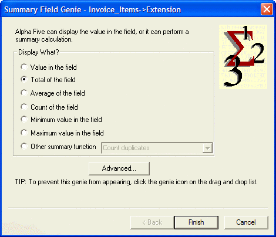

Creating and Using a Summary Field
The Summary Genie assists you in creating calculated fields that summarize various aspects of a field over a group of records or over the whole table. The Summary Genie will summarize over the child records for a given parent record if you select a field or expression based on a child record. It will summarize over the whole table if you select a field or expression based on a parent record. The following functions are supported:
|
Summary Function |
Description | |
|
Total |
Total of a group of number values. | |
|
Average |
Average of a group of number values. | |
|
Count |
Count of records for a group of records. | |
|
Minimum value |
Minimum character or number value for a group of records. | |
|
Maximum value |
Maximum character or number value for a group of records. | |
|
Other function |
Count duplicates |
A summary function that returns the number of Duplicate records for the expression evaluated for a group of records. |
|
First in group |
A summary function that returns the First value of the expression evaluated for a group of records. | |
|
Last in group |
A summary function that returns the Last value of the expression evaluated for a group of records. | |
|
Standard deviation |
Returns the Standard Deviation of the field's expression evaluated for a group of records. | |
|
Standard deviation for population |
Returns the Population Standard Deviation of the field's expression evaluated for a group of records. | |
|
Variance |
Returns the Variance of the field's expression evaluated for a group of records. | |
|
Variance for population |
Returns the Population Variance of the field's expression evaluated for a group of records. | |
Procedure: Create a Summary Field
The following procedure assumes that the developer has opened the form in the Form Editor. Follow these instructions to create a summary field function similar to the grand_total field on the Invoice form:
Click
 to display a list of table fields.
to display a list of table fields.Click the Genie
 button so that it is depressed.
button so that it is depressed.Drag a field with a number value, such Invoice_Items->Extension onto the form.
Click the Total of the field option button when the Summary Field Genie appears.
Click Finish.

See Also